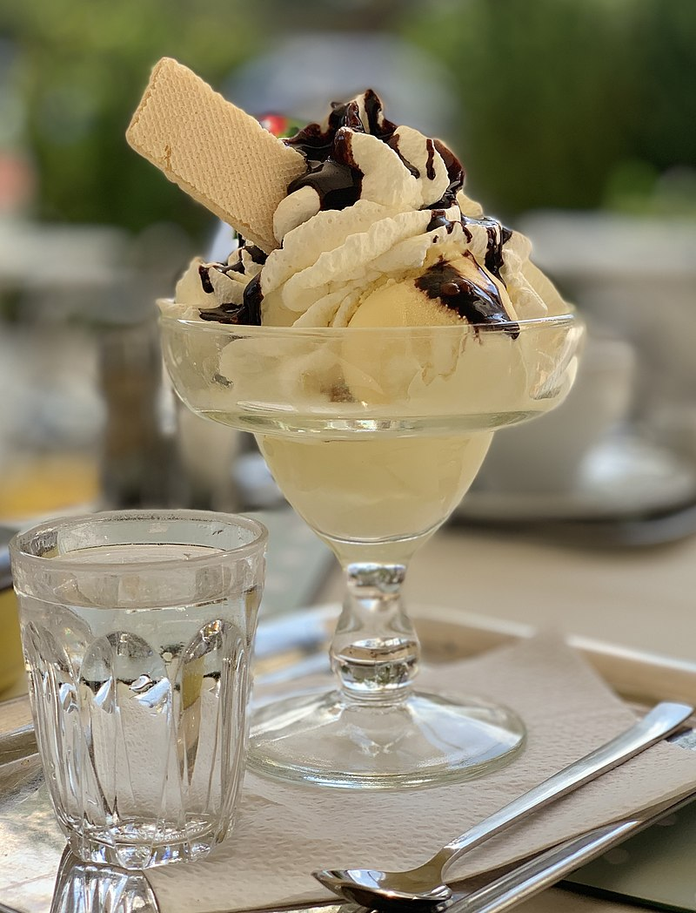

Ice cream
Description
This recipe is for a delicious tasting vanilla ice cream. This uses a great balance of ingredients like cream and milk to provide a creamy yet sweet ice cream
Ingredients
- heavy cream
- milk
- vanilla
- ice
Steps
- pour heavy cream and milk in a bag
- Add that bag to another bag filled with ice
- Add vanilla to the cream and milk
- Shake the bag vigorously and then put it in the freezer, shaking every 15 minutes